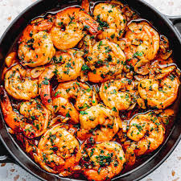

Simple Spanish Style Shrimp

Description
A simple spanish style shrimp in olive oil brimming with garlic and paprika flavour.
Ingredients for serving size of
4
2 kg
Frozen, peeled and deveined large shrimp1 tsp
Hot smoked paprika4 cloves
Garlic1/4 cup
Extra-virgin olive oil2 Tbsp
Sherry or white wine1 Tbsp
Chopped Parsley- Salt
Preparation
- Place shrimp in a bowl and coat with paprika and salt evenly
- Slice garlic into thin slices
Cooking
- Heat olive oil on medium heat, add garlic and cook for about 2 minutes until golden
- Pour in sherry or white wine and stir continuously until sauce is boiling and the shrimp is cooked through and add 1 minute
- Remove from heat, stir in parsley and then serve
Back to Index